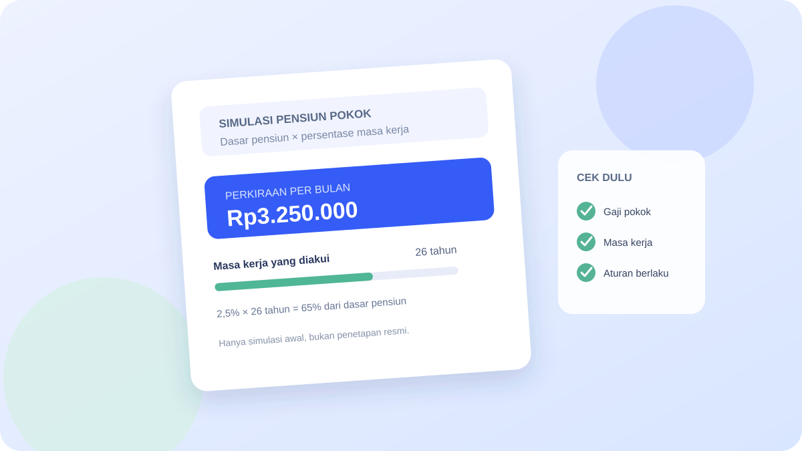

Cara Menghitung Gaji Pensiun PNS: Rumus dan Kalkulator Simulasi
Pahami rumus pensiun pokok PNS, siapkan data yang tepat, lalu coba kalkulator simulasi dengan angka yang bisa kamu sesuaikan.

Halaman ini hanya untuk tinjauan. Belum diizinkan untuk tayang dan tidak masuk ke build publik.
Jawaban singkat
Rumus umum memakai 2,5% dari dasar pensiun untuk setiap tahun masa kerja. BKN merangkum batas 40%–75%; UU juga melarang hasil di bawah gaji pokok terendah yang berlaku. Kalkulator ini hanya simulasi umum, bukan penetapan hak pensiun.
Banyak PNS ingin tahu berapa penghasilan bulanan setelah pensiun. Rumus dasarnya memang bisa dipahami dengan cepat, tetapi hasil resmi bergantung pada gaji pokok sebagai dasar pensiun dan masa kerja pensiun yang diakui. Jadi, simulasi mandiri berguna untuk mendapat gambaran awal, bukan untuk menggantikan keputusan pensiun dari instansi dan BKN.
Inti ketentuan
UU Nomor 11 Tahun 1969 Pasal 11 menetapkan 2,5 persen dari dasar pensiun untuk setiap tahun masa kerja, paling tinggi 75 persen. Pasal ini juga menetapkan pensiun tidak boleh lebih rendah dari gaji pokok terendah menurut peraturan gaji yang berlaku. KMS Manajemen ASN BKN merangkum batas minimum umum 40 persen dari dasar pensiun, di samping batas gaji pokok terendah tersebut. Dasar pensiun simulasi ini ialah gaji pokok terakhir, sesuai penjelasan BKN. Kasus khusus seperti cacat karena tugas, pensiun janda/duda, dan pensiun tewas memiliki ketentuan tersendiri dan tidak disimulasikan.
Sebagai gambaran awal, dasar pensiun merujuk pada gaji pokok terakhir, bukan seluruh take-home pay. Tunjangan kinerja, TPP, uang makan, atau total penghasilan bulanan saat masih aktif tidak otomatis menjadi dasar rumus 2,5 persen ini.
Apa rumus sederhananya?
Rumus ilustrasi yang sering dipakai adalah:
Pensiun pokok perkiraan per bulan = 2,5% × masa kerja pensiun yang diakui × dasar pensiun
Secara ilustratif, persentase dihitung 2,5% × (tahun + bulan/12), dengan batas minimum 40% dan maksimum 75% sebagaimana diringkas KMS Manajemen ASN BKN. Hasil juga tidak boleh di bawah gaji pokok terendah menurut peraturan gaji yang berlaku. UU Nomor 11 Tahun 1969 Pasal 6 ayat (5) menyebut pecahan bulan dibulatkan ke atas menjadi sebulan penuh. Kalkulator memakai masa kerja pensiun yang sudah diverifikasi; ia tidak menentukan sendiri masa kerja yang diakui. Batas 75% tercapai pada 30 tahun. Nilai final mengikuti penetapan resmi dan pemeriksaan dokumen.
Kalkulator simulasi pensiun pokok
Masukkan gaji pokok terakhir sebagai dasar pensiun dan masa kerja pensiun yang sudah diverifikasi. Kalkulator memakai batas 40%–75% serta pembanding gaji pokok terendah.
Nilai awal mengikuti batas bawah tabel gaji PP 5/2024. Sesuaikan bila peraturan gaji yang berlaku saat penetapan berubah.
Simulasi umum ini memakai 2,5% per tahun dan bulan, minimum 40%, maksimum 75%, serta lantai gaji pokok terendah. Tidak memeriksa kelayakan, data kepegawaian, atau kasus khusus; tidak menghitung tunjangan, potongan, THT, maupun nilai bersih. Angka resmi mengikuti penetapan instansi. Masukan diproses di browser dan tidak disimpan.
Contoh simulasi
Misalnya, sebagai ilustrasi saja:
- dasar pensiun: Rp5.000.000;
- masa kerja pensiun yang diakui: 26 tahun penuh (ilustrasi sederhana; bulan tambahan belum dihitung);
- persentase ilustrasi: 2,5% × 26 = 65%;
- perkiraan pensiun pokok: 65% × Rp5.000.000 = Rp3.250.000 per bulan.
Angka Rp3.250.000 ini bukan janji nilai pensiun dan bukan hasil penetapan resmi. Contoh sengaja memakai angka dasar pensiun dan masa kerja dalam tahun penuh agar alurnya terlihat. Bulan tambahan tidak dimasukkan ke ilustrasi ini; gunakan masa kerja pensiun yang sudah diverifikasi instansi. Dasar pensiun dan masa kerja pada berkas seseorang bisa berbeda.
Jika masa kerja yang dihitung mencapai 30 tahun atau lebih, persentase dalam rumus umum dibatasi paling tinggi 75 persen. Contohnya, 75 persen dari dasar pensiun Rp5.000.000 adalah Rp3.750.000. Batas ini hanya menjelaskan komponen pensiun pokok dalam simulasi, bukan seluruh penghasilan bersih penerima pensiun.
Angka apa yang perlu diketahui sebelum membuat perkiraan?
Pertama, cari gaji pokok terakhir sesuai pangkat, golongan ruang, dan masa kerja golongan yang akan digunakan dalam penetapan. Jangan mengambil angka dari slip gaji total tanpa memisahkan gaji pokok dari tunjangan.
Kedua, periksa masa kerja pensiun pada dokumen kepegawaian. Masa kerja pensiun tidak selalu sama dengan masa kerja golongan. Riwayat pengangkatan, masa kerja yang pernah diperhitungkan, perubahan golongan, dan keputusan terkait dapat memengaruhi angka yang dicatat. Pastikan sumber data yang dipakai sama dengan dokumen resmi, bukan hitungan kasar dari ingatan.
Ketiga, cek kembali dokumen yang dipakai instansi untuk menyiapkan keputusan pensiun. Tanyakan kepada pengelola kepegawaian atau unit yang menangani pensiun apabila ada selisih pada tanggal pengangkatan, masa kerja, pangkat, atau gaji pokok. Hindari mengirim NIP atau berkas pribadi ke situs simulasi yang tidak jelas pengelolaannya.
Apakah pensiun pokok sama dengan uang yang masuk setiap bulan?
Tidak selalu. Istilah “gaji pensiun” sering dipakai sehari-hari untuk menyebut seluruh uang pensiun bulanan. Dalam aturan, pensiun pokok adalah salah satu komponennya. Undang-Undang Nomor 11 Tahun 1969 juga menyebut tunjangan keluarga dan tunjangan lain menurut ketentuan yang berlaku. Penghasilan yang dibayarkan dapat dipengaruhi komponen tambahan dan potongan yang berlaku bagi penerima.
Karena itu, hasil rumus sederhana di atas tidak boleh langsung dianggap sama dengan nominal bersih yang masuk ke rekening. Untuk nilai bulanan final, rujuk keputusan pensiun dan informasi pembayaran resmi dari instansi serta TASPEN.
Apakah THT ikut dihitung dengan rumus 2,5 persen?
Tidak. Tabungan Hari Tua (THT) merupakan manfaat yang berbeda dari pensiun bulanan. TASPEN menjelaskan THT sebagai program asuransi yang mencakup manfaat terkait usia pensiun, meninggal dunia, atau berhenti karena sebab tertentu. Jangan menjumlahkan perkiraan THT dengan pensiun pokok lalu menyebutnya sebagai gaji pensiun bulanan.
Jika sedang menyiapkan kebutuhan setelah purnatugas, pisahkan setidaknya tiga hal dalam catatan pribadi: estimasi pensiun bulanan, manfaat THT yang akan dihitung sesuai ketentuan TASPEN, dan tabungan atau sumber penghasilan lain. Nominal manfaat THT tidak dihitung dalam contoh rumus artikel ini.
Apa peran aturan tahun 2024?
Peraturan Pemerintah Nomor 8 Tahun 2024 menetapkan penyesuaian pensiun pokok PNS dan janda/dudanya dengan merujuk pada perubahan gaji pokok PNS yang berlaku mulai 1 Januari 2024. Peraturan BKN Nomor 2 Tahun 2024 mengatur petunjuk teknis penetapan atau penyesuaian serta pemberian selisih pensiun pokok.
Kedua peraturan ini penting saat membaca daftar atau keputusan pensiun yang menggunakan ketentuan 2024. Namun, keberadaan aturan tersebut bukan bukti bahwa ada kenaikan pensiun baru pada 2026. Untuk kabar perubahan terbaru, periksa peraturan yang berlaku dan pengumuman resmi, bukan unggahan yang hanya menyebut angka atau rapel tanpa dokumen pendukung.
Kesalahan yang sering membuat simulasi meleset
- Memakai total take-home pay sebagai dasar pensiun, padahal rumus umum merujuk pada dasar pensiun.
- Menganggap masa kerja golongan sama dengan masa kerja pensiun.
- Menghitung seluruh masa kerja dari ingatan tanpa mencocokkan tanggal pada dokumen kepegawaian.
- Mengalikan masa kerja di atas 30 tahun tanpa menerapkan batas maksimum 75 persen.
- Menyamakan pensiun pokok, penghasilan bulanan bersih, dan manfaat THT.
- Menganggap simulasi online sebagai keputusan resmi atau menganggap semua penerima memiliki komponen pembayaran yang sama.
Ringkasnya
Untuk membuat gambaran awal, kalikan dasar pensiun dengan 2,5 persen untuk setiap tahun masa kerja pensiun yang diakui, dengan batas maksimum 75 persen. Contoh ini hanya membantu memahami rumus. Nominal resmi ditetapkan melalui proses kepegawaian dengan dokumen dan ketentuan yang berlaku bagi kondisi masing-masing PNS.
Jika data pangkat, masa kerja, atau gaji pokok belum cocok, minta pemeriksaan ke unit kepegawaian sebelum membuat rencana keuangan berbasis angka simulasi. Untuk informasi pembayaran dan manfaat THT, gunakan kanal resmi TASPEN.
Pertanyaan yang sering diajukan
Apakah TPP ikut masuk ke dasar pensiun?
Rumus umum pada Pasal 11 UU Nomor 11 Tahun 1969 menggunakan dasar pensiun, yang dijelaskan BKN sebagai gaji pokok terakhir sesuai peraturan gaji. TPP bukan dasar yang disebut dalam rumus tersebut.
Berapa pensiun PNS dengan masa kerja 30 tahun?
Dalam rumus umum, 30 tahun × 2,5 persen menghasilkan batas maksimum 75 persen dari dasar pensiun. Nilai rupiah bergantung pada dasar pensiun yang tercatat dan keputusan resmi.
Apakah hasil kalkulator pensiun pasti sama dengan keputusan BKN?
Tidak. Kalkulator sederhana biasanya tidak memeriksa dokumen kepegawaian, masa kerja yang diakui, penyesuaian aturan, tunjangan, atau potongan. Gunakan hanya sebagai perkiraan awal.
Apakah THT dibayarkan setiap bulan?
THT berbeda dari pensiun bulanan. Rincian manfaat mengikuti program dan perhitungan TASPEN untuk peserta yang bersangkutan.
Sumber primer dan rujukan
- Undang-Undang Nomor 11 Tahun 1969 tentang Pensiun Pegawai dan Pensiun Janda/Duda Pegawai — JDIH BPK, khususnya Pasal 8, Pasal 9, Pasal 11, dan Pasal 12.
- Peraturan Pemerintah Nomor 5 Tahun 2024 tentang tabel gaji PNS — JDIH BPK.
- Lampiran Peraturan BKN Nomor 1 Tahun 2024, tabel penyesuaian gaji ke PP 5/2024 — JDIH BPK.
- Peraturan Pemerintah Nomor 8 Tahun 2024 tentang penetapan pensiun pokok — JDIH BPK.
- Peraturan BKN Nomor 2 Tahun 2024 — JDIH BPK.
- Penjelasan pensiun PNS — KMS Manajemen ASN BKN.
- Program Tabungan Hari Tua — TASPEN.
Terakhir diperiksa: 23 Oktober 2026. Naskah ini masih draft; cek ulang status peraturan dan angka dasar pensiun sebelum proses publikasi.
Apakah penjelasan dan kalkulator ini membantu?
Formulir komentar tidak aktif pada draft internal ini.